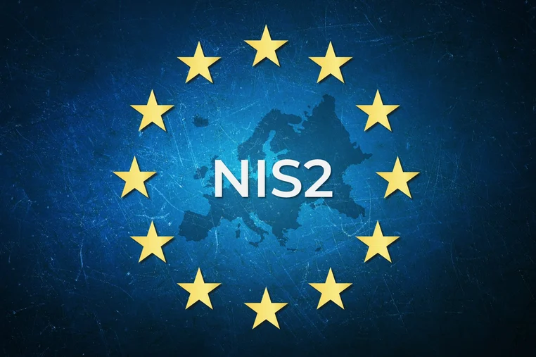

Welcome — Cyber & Data Law Guide
This site collects short, practical summaries of key UK & EU laws, standards, and regulations that apply to IT, cybersecurity, data protection and online services. Use it for education, internal policy foundations, or as a starting point while building compliance pages for your organisation.
UK & EU focused (GDPR/UK-GDPR, DPA 2018) with major supporting acts. Not legal advice — consult a qualified lawyer for binding guidance.
Company privacy pages, security policy overviews, staff training handouts, and website legal pages.
Includes references to standards like ISO/IEC 27001 and PCI-DSS for technical controls and payment compliance.
GDPR — General Data Protection Regulation (EU) & UK-GDPR

The GDPR and Data Protection Act 2018 regulate how personal data is collected, used, stored and shared by organisations processing information about UK/EU residents. These laws require transparency about processing activities, purpose limitation so data is used only for clear reasons, and minimisation so only necessary data is kept. Organisations must implement appropriate technical and organisational measures to secure data, maintain records of processing activities and perform Data Protection Impact Assessments when processing risks are high. Data subjects have enforceable rights such as access, rectification, erasure, and portability, and regulators can impose significant fines for serious breaches.
- Enforces lawful bases for processing personal data (e.g. consent, contract, legitimate interests).
- Gives individuals rights including access, erasure ("right to be forgotten"), portability and objection to processing.
- Requires strong security controls, DPIAs for high-risk processing and mandatory breach reporting to regulators.
Conclusion: GDPR ensures organisations are accountable for personal data and helps maintain public trust through enforceable individual rights and security obligations.
Computer Misuse Act 1990

The Computer Misuse Act 1990 criminalises unauthorised access to computer systems and associated actions that harm the confidentiality, integrity or availability of data. It covers a range of offences from simple unauthorised access and intent to commit further offences, to serious acts such as the creation and distribution of malware, denial-of-service attacks and tampering with data. Over time courts and lawmakers have interpreted and updated the framework to address evolving threats like ransomware and botnets, while balancing criminal liability against legitimate security research.
- Criminalises unauthorised access to computer systems and unauthorised modifications of data.
- Prohibits making, supplying or obtaining malware for use in offences.
- Applies to attacks that disrupt services (e.g., DDoS), data tampering and ransomware deployment.
Conclusion: The Act provides legal tools to deter and prosecute malicious cyber activity while encouraging responsible security practices.
Online Safety Act 2023

The Online Safety Act places duties on operators of online platforms to identify, assess and mitigate risks posed by illegal and harmful content — particularly where it impacts children and other vulnerable groups. Platforms are required to take proportionate steps to prevent the dissemination of illegal content, to offer tools and settings that protect users, and to be transparent about content moderation and recommendation systems. Ofcom has been given enforcement powers to ensure compliance and to impose fines or other sanctions for systemic failings.
- Obliges platforms to proactively manage illegal content and serious harms affecting children and vulnerable users.
- Requires safety-by-design features, clear reporting routes and moderation transparency reporting.
- Enables regulator (Ofcom) enforcement including fines, compliance notices and publicity orders.
Conclusion: The Act shifts responsibility onto platforms to make their services safer and more transparent for users, especially minors.
Investigatory Powers Act 2016

The Investigatory Powers Act provides a statutory framework for the lawful interception of communications, equipment interference and the retention of communications data by public authorities for national security and crime prevention purposes. The Act centralises and clarifies authorities' powers while introducing oversight mechanisms such as judicial authorisations and independent commissioners to reduce the risk of misuse. It remains controversial due to concerns about bulk data collection and the balance between privacy and public safety.
- Authorises lawful interception, targeted and bulk data acquisition under warrant or judicial approval.
- Includes safeguards such as oversight by judicial commissioners and requirements for proportionality and necessity.
- Raises public policy debates regarding privacy, mass retention of communications data and transparency.
Conclusion: The Act seeks to balance national security needs with safeguards to protect citizens' privacy, though debates about scope and oversight persist.
Telecommunications (Security) Act 2021

The Telecommunications (Security) Act enhances the security and resilience requirements for public electronic communications networks and service providers. It focuses on managing supply-chain risks, reducing dependence on high-risk vendors, and ensuring operators carry out risk assessments and implement proportionate technical controls. Regulators can require remedial actions and levy fines where operators fail to manage or mitigate cybersecurity risks to national infrastructure.
- Mandates security duties for telecom operators, including risk assessments and incident management.
- Reduces supply-chain risk exposure by restricting use of high-risk vendors and requiring mitigations.
- Gives regulators enforcement powers to demand remedial action and impose penalties.
Conclusion: The Act strengthens national telecom resilience by requiring proactive security and better supplier governance.
E-Commerce Regulations 2002 & Electronic Communications Act 2000
The E-Commerce Regulations 2002 and the Electronic Communications Act 2000 provide the legal basis for electronic trading and communications, ensuring consumer protections and the validity of electronic contracts and signatures. These rules require businesses to provide clear information to consumers, maintain transparent commercial communications and enable enforceable electronic transactions. They are essential for online retailers, service providers and platforms operating across borders.
- Requires clear pre-contractual information (identity, pricing, charges, refund terms) for online sellers.
- Regulates commercial electronic communications, advertising and ensures consent for marketing messages.
- Recognises electronic signatures and supports secure electronic contracting and records.
Conclusion: These laws underpin trust in online commerce by protecting consumers and validating digital transactions.
Copyright, Designs & Patents Act 1988 & Digital Economy Act 2017
The Copyright, Designs and Patents Act protects creators' rights over original works, including software, images, audio and video, by granting exclusive rights to copy, adapt and distribute. The Digital Economy Act complements this by addressing online enforcement, takedown procedures and measures to deter large-scale infringement. Together they provide a framework for rights management, licensing and remedies against unauthorised use.
- Grants creators exclusive rights to reproduce, adapt and distribute their works and enables civil and criminal remedies for infringement.
- Provides mechanisms for notice-and-takedown and court orders targeting large-scale piracy under the Digital Economy Act.
- Supports licensing models and exceptions (e.g., fair dealing) for education, quotation and criticism.
Conclusion: These laws protect intellectual property and help maintain fair markets for creators and businesses online.
Freedom of Information Act 2000
The Freedom of Information Act gives the public the right to access recorded information held by public authorities, promoting transparency and accountability. Public bodies must handle requests within statutory timescales, publish certain information proactively and apply exemptions when disclosure would harm national security, personal data or commercial interests. FOI obligations are central to open governance and public confidence in institutions.
- Allows individuals to request information from public authorities within statutory time limits (normally 20 working days).
- Requires public bodies to publish key information proactively and maintain publication schemes.
- Includes exemptions (e.g., national security, personal data, commercial sensitivity) that permit refusal in specified circumstances.
Conclusion: FOI increases government transparency while balancing legitimate confidentiality and privacy concerns.
NIS2 Directive (EU) & Critical Services
The NIS2 Directive expands and tightens cybersecurity requirements across EU Member States for operators of essential and important entities in sectors like energy, transport, health, finance and digital infrastructure. It raises expectations for governance, incident reporting, supply chain security and accountability at board level. Organisations falling within scope must adopt stronger risk management measures and cooperate with national authorities to improve the overall resilience of European critical services.
- Extends scope to more sectors and organisations, increasing the number of entities subject to mandatory cybersecurity rules.
- Requires timely incident reporting, coordinated response and cross-border cooperation among Member States.
- Introduces governance obligations and accountability for senior management regarding cyber risk management.
Conclusion: NIS2 raises the baseline for cyber resilience across Europe and drives greater corporate accountability for critical services.
Standards: ISO/IEC 27001, PCI-DSS

ISO/IEC 27001 and PCI-DSS are widely used security standards that help organisations structure their information security programmes and protect payment card data respectively. While they are not laws, many customers, partners and regulators expect compliance with these standards as evidence of reasonable security practices. Implementing them supports risk management, incident readiness and regulatory alignment.
- ISO/IEC 27001 specifies requirements for an Information Security Management System (ISMS) to manage risks systematically.
- PCI-DSS mandates technical and operational controls to protect cardholder data for organisations processing payments.
- Adoption demonstrates due diligence and can reduce exposure to breaches and regulatory scrutiny.
Conclusion: Standards provide practical frameworks to improve security posture and demonstrate compliance to stakeholders.
Contact, Reporting & Useful Practices

If a breach or security incident occurs, organisations should follow a documented incident response plan that covers detection, containment, eradication, recovery and lessons learned. Notify affected individuals and regulators (e.g., ICO in the UK) when required by law, and preserve forensic evidence for investigation. Maintain clear public-facing contact channels for privacy and security queries, and keep records of decisions and communications to demonstrate accountability.
- Have an incident response plan with roles, escalation paths and communication templates.
- Report qualifying data breaches to the relevant supervisory authority and notify affected data subjects where necessary.
- Keep incident logs, preserve evidence and perform post-incident reviews to improve controls.
Conclusion: Preparedness, transparent reporting and continuous improvement are key to reducing impact and rebuilding trust after incidents.
Have triage, containment, eradication and lessons-learned steps defined.

Record breach details, impact assessments, and notifications to affected parties where required.

Use this site as a base to create privacy policies, security policies and terms of use.
Disclaimer
This site provides summaries for educational and informational purposes only. It does not constitute legal advice. For specific legal obligations, consult a qualified lawyer or regulatory guidance applicable to your organisation.